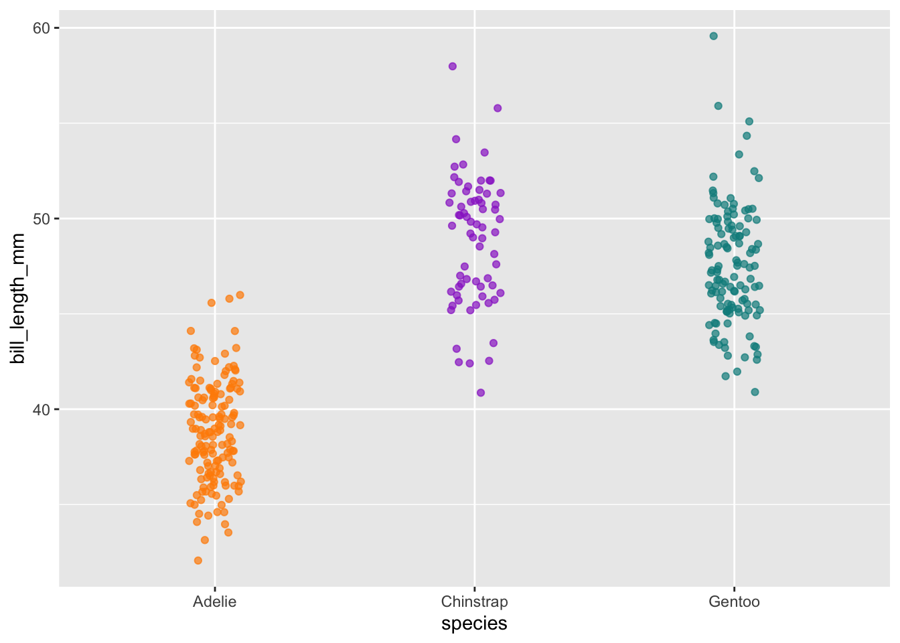

install.packages("palmerpenguins")Introduction to palmerpenguins
About the activity
This is a Quarto document that you can download from the github repository for the course, and as you see below there is a combination of narrative text, code chunks, code outputs, citations/references, embedded links, and even embedded static images. Quarto documents are highly customizable and the purpose is to generate a story-telling narrative of data by incorporating all these components into a single document.
In order to jump into data analysis we first need data! R has several datasets readily available to start explore including:
Anderson’s Iris dataset (see
datasets::iris). The iris data gives the measurements in centimeters of the variables sepal length and width and petal length and width, respectively, for 50 flowers from each of 3 species of iris. The species are Iris setosa, versicolor, and virginica.1974 Motor Trend Cars dataset (see
datasets::mtcars). The data was extracted from the 1974 Motor Trend US magazine, and comprises fuel consumption and 10 aspects of automobile design and performance for 32 automobiles (1973–74 models).and many more (see tab complete options for
datasets::).
Today we will investigate the palmerpenguins dataset.

The palmerpenguins R package contains two datasets. In this introductory vignette, we’ll highlight some of the properties of these datasets that make them useful for statistics and data science education.
Meet the penguins
The palmerpenguins data contains size measurements for three penguin species observed on three islands in the Palmer Archipelago, Antarctica.

These data were collected from 2007 - 2009 by Dr. Kristen Gorman with the Palmer Station Long Term Ecological Research Program, part of the US Long Term Ecological Research Network. The data were imported directly from the Environmental Data Initiative (EDI) Data Portal, and are available for use by CC0 license (“No Rights Reserved”) in accordance with the Palmer Station Data Policy.
Installation
You can install the released version of palmerpenguins from CRAN with:
The palmerpenguins package
The curated palmerpenguins::penguins dataset contains 8 variables (n = 344 penguins). You can read more about the variables by typing ?penguins.
data <- penguins
glimpse(penguins)Rows: 344
Columns: 8
$ species <fct> Adelie, Adelie, Adelie, Adelie, Adelie, Adelie, Adel…
$ island <fct> Torgersen, Torgersen, Torgersen, Torgersen, Torgerse…
$ bill_length_mm <dbl> 39.1, 39.5, 40.3, NA, 36.7, 39.3, 38.9, 39.2, 34.1, …
$ bill_depth_mm <dbl> 18.7, 17.4, 18.0, NA, 19.3, 20.6, 17.8, 19.6, 18.1, …
$ flipper_length_mm <int> 181, 186, 195, NA, 193, 190, 181, 195, 193, 190, 186…
$ body_mass_g <int> 3750, 3800, 3250, NA, 3450, 3650, 3625, 4675, 3475, …
$ sex <fct> male, female, female, NA, female, male, female, male…
$ year <int> 2007, 2007, 2007, 2007, 2007, 2007, 2007, 2007, 2007…head(penguins)# A tibble: 6 × 8
species island bill_length_mm bill_depth_mm flipper_length_mm body_mass_g
<fct> <fct> <dbl> <dbl> <int> <int>
1 Adelie Torgersen 39.1 18.7 181 3750
2 Adelie Torgersen 39.5 17.4 186 3800
3 Adelie Torgersen 40.3 18 195 3250
4 Adelie Torgersen NA NA NA NA
5 Adelie Torgersen 36.7 19.3 193 3450
6 Adelie Torgersen 39.3 20.6 190 3650
# ℹ 2 more variables: sex <fct>, year <int>The palmerpenguins::penguins data contains 333 complete cases, with 19 missing values.

Let’s Explore
Lets explore, visualization, and analyses some of the penguin data. Below are just a few examples to get you quickly waddling along with the penguins. You can check out more in vignette("examples").
Exploring factors
The penguins data has three factor variables:
penguins |>
dplyr::select(where(is.factor)) |>
glimpse()Rows: 344
Columns: 3
$ species <fct> Adelie, Adelie, Adelie, Adelie, Adelie, Adelie, Adelie, Adelie…
$ island <fct> Torgersen, Torgersen, Torgersen, Torgersen, Torgersen, Torgers…
$ sex <fct> male, female, female, NA, female, male, female, male, NA, NA, …# Count penguins for each species / island
penguins %>%
count(species, island, .drop = FALSE)# A tibble: 9 × 3
species island n
<fct> <fct> <int>
1 Adelie Biscoe 44
2 Adelie Dream 56
3 Adelie Torgersen 52
4 Chinstrap Biscoe 0
5 Chinstrap Dream 68
6 Chinstrap Torgersen 0
7 Gentoo Biscoe 124
8 Gentoo Dream 0
9 Gentoo Torgersen 0table(penguins$species, penguins$island)
Biscoe Dream Torgersen
Adelie 44 56 52
Chinstrap 0 68 0
Gentoo 124 0 0Plots are the easiest way to explore and understand your data.
1. Lets first plot the number of penguins of each species across the 3 Palmer Archipelago islands.
ggplot(penguins, aes(x = island, fill = species)) +
geom_bar(alpha = 0.8) +
scale_fill_manual(values = c("darkorange","purple","cyan4")) +
theme_minimal() +
facet_wrap(~species, ncol = 1) +
coord_flip()2. Next lets look at how many males and females we have of each species of penguins.
# Count penguins for each species / sex
penguins |>
count(species, sex, .drop = FALSE)# A tibble: 8 × 3
species sex n
<fct> <fct> <int>
1 Adelie female 73
2 Adelie male 73
3 Adelie <NA> 6
4 Chinstrap female 34
5 Chinstrap male 34
6 Gentoo female 58
7 Gentoo male 61
8 Gentoo <NA> 5ggplot(penguins, aes(x = sex, fill = species)) +
geom_bar(alpha = 0.8) +
scale_fill_manual(values = c("darkorange","purple","cyan4"),
guide = FALSE) +
theme_minimal() +
facet_wrap(~species, ncol = 1) +
coord_flip()Exploring scatterplots
The penguins data also has four numeric variables. Lets plot those variables too!
penguins |>
dplyr::select(where(is.numeric)) |>
glimpse()Rows: 344
Columns: 5
$ bill_length_mm <dbl> 39.1, 39.5, 40.3, NA, 36.7, 39.3, 38.9, 39.2, 34.1, …
$ bill_depth_mm <dbl> 18.7, 17.4, 18.0, NA, 19.3, 20.6, 17.8, 19.6, 18.1, …
$ flipper_length_mm <int> 181, 186, 195, NA, 193, 190, 181, 195, 193, 190, 186…
$ body_mass_g <int> 3750, 3800, 3250, NA, 3450, 3650, 3625, 4675, 3475, …
$ year <int> 2007, 2007, 2007, 2007, 2007, 2007, 2007, 2007, 2007…# Count how many penguins they evaluated each year
penguins |>
count(year, species, .drop = FALSE)# A tibble: 9 × 3
year species n
<int> <fct> <int>
1 2007 Adelie 50
2 2007 Chinstrap 26
3 2007 Gentoo 34
4 2008 Adelie 50
5 2008 Chinstrap 18
6 2008 Gentoo 46
7 2009 Adelie 52
8 2009 Chinstrap 24
9 2009 Gentoo 44table(penguins$year, penguins$species)
Adelie Chinstrap Gentoo
2007 50 26 34
2008 50 18 46
2009 52 24 44Scatterplot example 1: penguin flipper length versus body mass
ggplot(data = penguins, aes(x = flipper_length_mm, y = body_mass_g)) +
geom_point()
You can add color and/or shape aesthetics in ggplot2 to layer in factor levels. With three factor variables to work with, you can add another factor layer with facets.
# Scatterplot example 1: penguin flipper length versus body mass
ggplot(data = penguins, aes(x = flipper_length_mm, y = body_mass_g)) +
geom_point(aes(color = species,
shape = species),
size = 2) +
scale_color_manual(values = c("darkorange","darkorchid","cyan4")) # Scatterplot example 2: penguin bill length versus bill depth
ggplot(data = penguins, aes(x = bill_length_mm, y = bill_depth_mm)) +
geom_point(aes(color = species,
shape = species),
size = 2) +
scale_color_manual(values = c("darkorange","darkorchid","cyan4"))# Scatterplot example 3: penguin flipper length versus body mass separated by species and sex
ggplot(penguins, aes(x = flipper_length_mm,
y = body_mass_g)) +
geom_point(aes(color = sex)) +
scale_color_manual(values = c("deeppink2","cornflowerblue"),
na.translate = FALSE) + # removes the "NA" values
facet_wrap(~species)# Scatterplot example 4: penguin flipper length versus body mass separated by all 3 factor variables
ggplot(penguins, aes(x = flipper_length_mm,
y = body_mass_g)) +
geom_point(aes(color = sex, shape = island)) +
scale_color_manual(values = c("deeppink2","cornflowerblue"),
na.translate = FALSE) + # removes the "NA" values
facet_wrap(~species)Exploring correlations
penguins |>
select(species, body_mass_g, ends_with("_mm")) %>%
GGally::ggpairs(aes(color = species)) +
scale_colour_manual(values = c("darkorange","purple","cyan4")) +
scale_fill_manual(values = c("darkorange","purple","cyan4"))Statistically evaluating distributions
# Jitter plot example: bill length by species
ggplot(data = penguins, aes(x = species, y = bill_length_mm)) +
geom_jitter(aes(color = species),
width = 0.1,
alpha = 0.7,
show.legend = FALSE) +
scale_color_manual(values = c("darkorange","darkorchid","cyan4"))
# Boxplot examples: bill length by species
ggplot(data = penguins, aes(x = species, y = bill_length_mm)) + geom_boxplot(aes(fill = species)) +
scale_fill_manual(values = c("orange","orchid","cyan3"))ggplot(data = penguins, aes(x = species, y = bill_length_mm)) +
geom_boxplot(aes(fill = species), outlier.shape = NA) +
geom_jitter(aes(color = species),
width = 0.1,
alpha = 0.7,
show.legend = FALSE) +
scale_color_manual(values = c("darkorange2","darkorchid","cyan4")) +
scale_fill_manual(values = c("orange","orchid","cyan3"))# Histogram example: flipper length by species
ggplot(data = penguins, aes(x = flipper_length_mm)) +
geom_histogram(aes(fill = species), alpha = 0.5, position = "identity") +
scale_fill_manual(values = c("darkorange","darkorchid","cyan4"))Acknowlegements
This vignette was originally written by Allison Horst, Alison Hill, and Kristen Gorman. You can find info about the palmerpenguins package here!
Package citation
Please cite the palmerpenguins R package using:
citation("palmerpenguins")To cite palmerpenguins in publications use:
Horst AM, Hill AP, Gorman KB (2020). palmerpenguins: Palmer
Archipelago (Antarctica) penguin data. R package version 0.1.0.
https://allisonhorst.github.io/palmerpenguins/. doi:
10.5281/zenodo.3960218.
A BibTeX entry for LaTeX users is
@Manual{,
title = {palmerpenguins: Palmer Archipelago (Antarctica) penguin data},
author = {Allison Marie Horst and Alison Presmanes Hill and Kristen B Gorman},
year = {2020},
note = {R package version 0.1.0},
doi = {10.5281/zenodo.3960218},
url = {https://allisonhorst.github.io/palmerpenguins/},
}References
Data originally published in:
- Gorman KB, Williams TD, Fraser WR (2014). Ecological sexual dimorphism and environmental variability within a community of Antarctic penguins (genus Pygoscelis). PLoS ONE 9(3):e90081. https://doi.org/10.1371/journal.pone.0090081
Individual datasets:
Individual data can be accessed directly via the Environmental Data Initiative:
Palmer Station Antarctica LTER and K. Gorman, 2020. Structural size measurements and isotopic signatures of foraging among adult male and female Adélie penguins (Pygoscelis adeliae) nesting along the Palmer Archipelago near Palmer Station, 2007-2009 ver 5. Environmental Data Initiative. https://doi.org/10.6073/pasta/98b16d7d563f265cb52372c8ca99e60f (Accessed 2020-06-08).
Palmer Station Antarctica LTER and K. Gorman, 2020. Structural size measurements and isotopic signatures of foraging among adult male and female Gentoo penguin (Pygoscelis papua) nesting along the Palmer Archipelago near Palmer Station, 2007-2009 ver 5. Environmental Data Initiative. https://doi.org/10.6073/pasta/7fca67fb28d56ee2ffa3d9370ebda689 (Accessed 2020-06-08).
Palmer Station Antarctica LTER and K. Gorman, 2020. Structural size measurements and isotopic signatures of foraging among adult male and female Chinstrap penguin (Pygoscelis antarcticus) nesting along the Palmer Archipelago near Palmer Station, 2007-2009 ver 6. Environmental Data Initiative. https://doi.org/10.6073/pasta/c14dfcfada8ea13a17536e73eb6fbe9e (Accessed 2020-06-08).
Have fun with the Palmer Archipelago penguins!